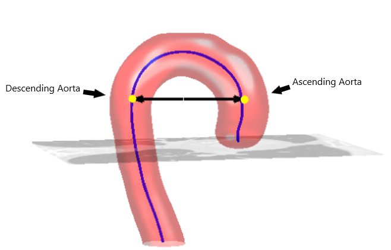

User Instructions¶
Date of project update: 2023/05/15
The AortaGeomRecon design document explains in detail of the algorithm workflow; It includes a detailed glossary of the terms used throughout the other documentation.
This project provides a software tool to semi-automatically segment a 3D aorta geometry from a chest CT scan. It uses a 3D Slicer extension in the source folder (SlicerExtension/AortaGeometryReconstructor) to accomplish the goal.
Users must first install the 3D Slicer software, import the extension in the source folder, and load the CT scans in DICOM file format to 3D Slicer. Valuable resources for using 3D Slicer includes a Welcome tutorial, a description of 3D Slicer user-interface, information on the Volume rendering module, and the 3D Slicer’s developer guide.
Overview¶
Automatic aorta segmentation in thoracic computed tomography (CT) scans is important for aortic calcification quantification and to guide the segmentation of other central vessels. The work to manually segment regions of interest can be time-consuming and repetitive, and there are some automatic aorta segmentation algorithms posted.
This project implemented one of the aorta segmentation algorithms as 3D Slicer extension module. The algorithm first needs the user to crop the volume of interest (VOI) by using the 3D Slicer’s volume rendering module. Next, the user needs to provide two important seeds, the center point of the descending Aorta and the center point of the ascending Aorta, as shown by the yellow dots in the image below.

The yellow dots are the two voxels as the Aorta seeds.
About 3D Slicer¶
3D Slicer is an open-sourced desktop software that solves advanced image computing challenges with a focus on clinical and biomedical applications. 3D Slicer software provides a clean user interface and a clear guide to developing highly customizable extensions and modules.
The folders and files for this project are as follows:
To install 3D Slicer and import an extension:¶
Download 3D Slicer from here. This project has been tested with the stable release, version 5.0.3.
Click on the image below for a video demonstrating the import of AortaGeomRecon module, and the complete workflow to perform aorta segmentation.
To apply the segmentation algorithm¶
Make sure that you have done the cropping and have a cropped volume in phase 1 Crop Aorta, then click on Apply to move to next phase.
Once you are in phase 2 Aorta Segmentation, right click on one of the red, green or yellow window image area, you should see a list of options as shown below.
Select the “Slice intersection” option once you have loaded AGR module. Right click and check “Interaction” option. Alternatively, you can hold “shift” and move around mouse cursor to move around the intersection point.
Hold on Mouse left button to drag and place the intersection point on the point of interest, as described in the image from Overview section.
In phase 2 Aorta Segmentation, you should see that the values of DesAortaSeeds and AscAortaSeeds coordinate are changing when moving the intersection point. Simply lock one of the two seeds with the corresponding checkbox and use intersection to input the other one. Make sure you select the two seeds from the same slice. Once you have entered all hyperparameters, click on Apply. After a few minutes, you should see a new volume named “Seg_th{a number}_k{a number}_c{a number}_p{a number}”, the name simply takes some of the important hyperparameters as the name, where “th” stands for threshold coefficient, k stands for kernel size, c for curvature scaling, and p for propagation scaling.
Additional tips for hyperparmeters optimization (based on the 6 samples).¶
As tested with the current 6 samples, I would always start with a threshold coefficient range of 2-3, a stop limit of 5-6, and kernel size of 7-10. This would ensure that the noises (blood vessels, backbones) are excluded as much as possible. Then start increasing the stop limit, threshold coefficient.
Curvature scaling adds weight to the segmentation speed term at the curvature. This implies the segmentation result would have high probability to include the curvature. However, this might not be the best hyperparameter to tune up, because usually the aorta is not an isolated island, and it connects to the backbone or other noises. Tune this hyperparameter up will segment out any connected island (noises).
Propagation scaling adds weight to the segmentation speed term in general, this means that if not reaching the boarder, the segmentation filter will include the next layer of pixels.
To display the segmentation label image¶
Use Volume Rendering Module and follow the step 2 to display the segmented volume. For example, to show the segmented result from phase 2 Descending Aorta Segmentation, you should select the volume with the name “Segmented Descending Aorta Volume” by default.
You can see both the original volume and the segmented volume to see the overlaps between the two volumes. Make sure you select the eye icon for both volumes, and make sure that the original volume use preset of CT-Bones to have the different coloring.
Get the vtk output of the cropped volume or segmentation label image¶
Use file dialog to select a path.
If on phase 1, the program outputs the cropped volume. Otherwise, the program outputs the segmentation label image.
Additional tips to use this application:¶
The user can save and load an MRML scene object, which is used to store all types of data, including the loaded Dicom data, any inputs by the user on the UI, markups, etc.
In “Application Settings”, and “Modules”, drag “AortaGeomReconDisplayModule”, “Volume Rendering”, and “Crop Volume” modules to your favorite modules to access these modules quickly from UI. Restart the application for the changes to the UI to appear.
The text description version of how to import an extension, load DICOM data, use volume rendering and crop volume:¶
To import AortaGeomReconDisplay module¶
Open Slicer application, select “Edit” from the bar menu, then “Application Settings” from the drop-down menu.
Select “Modules”, and add the “AortaGeomReconDisplayModule” folder in the additional module paths. This folder is located in src:raw-latex:SlicerExtension\AortaGeomReconDisplayModule.
Restart the application to take into account the new module paths.
Find the “AortaGeomReconDisplayModule” module as shown below:
To load DICOM data:¶
Select “File” from the bar menu, then “Add DICOM Data”.
The uploaded volume must be a scalar volume object to be viewed in the Volume Rendering module. Therefore, to make sure that we are uploading volume as a scalar volume, in “Add DICOM data” module, unselect the plugin MultiVolumeImporterPlugin as shown below,
Select “Import DICOM files”, and select one of the patient’s folders.
Once loaded, 3D Slicer will keep the patient record in the DICOM database, and the user can easily reload DICOM data from the DICOM database.
Select the patient file, click “load” button or double-click on the patient file to load the data into the program.
To use Volume Rendering to crop a VOI:¶
For this step we use the Volume Rendering module, a built-in module for 3D Slicer. 1. Load the Dicom files as described in the section To load DICOM data. 2. Once loaded, select the Volume Rendering module. Select the volume that you want to crop, and click on the eye icon on the left.
Within the module UI, under Display, enable Crop Display ROI, open the eye for ROI, and select CT-Bones for the preset. You should be able to see the 3D rendering in the top right corner. You can drag the points controls to control the crop, and use the sliders at the top of the image to scroll through the slice.
Change back to AortaGeomReconDisplayModule, you should also have a Volume rendering ROI or vtkMRMLMarkupsROINode object.
Select a new module, Crop volume, in Converters category. Select CreateNewVolumeParameters on Crop Volume Parameter Set.
For Input volume, select the volume to crop. For Input ROI, select the ROI we created with Volume Rendering module. The default name of the ROI is “Volume rendering ROI”. If you are unable to select ROI, go back to step 2 and use Volume Rendering module to create a ROI. For output volume, you can select create new volume or modify the original volume.
Clicks on “Apply”, and change back to AortaGeomReconDisplayModule, you should be able to find a new volume or the cropped volume.